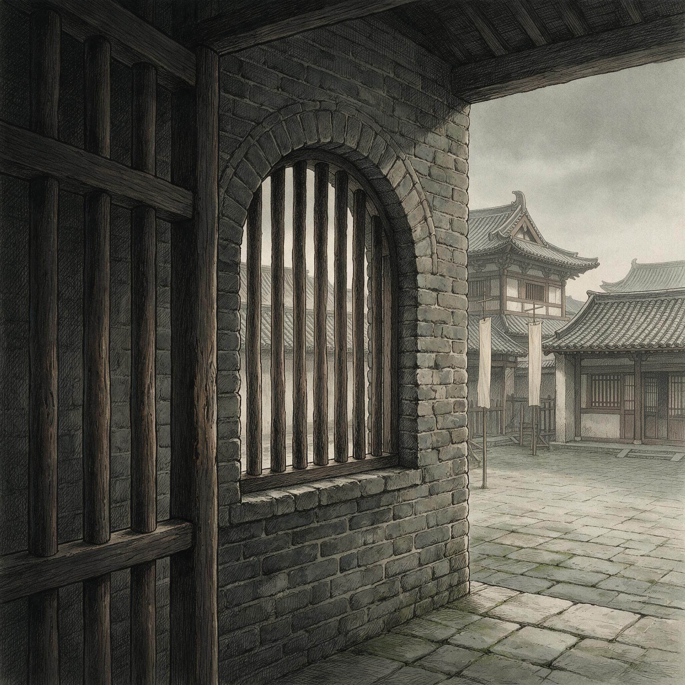

第 4 章
狱窗内外
汴京县狱东厢牢门的铁锁在卯时三刻准时弹开了。狱子周兴拔出钥匙，挂到腰间铁环上，弯腰拎起门槛外的木桶。桶里是糙米粥，按每人半勺的定量熬成——米粒少、汤水多，上面漂着几片菜叶。热气在九

狱窗内外：历史出版插图
AI 生成插图，非史实影像。
月的清晨里翻了两下就散了。周兴侧身挤进门缝，用脚把草荐边的一只空碗拨开。
东厢关的是杖以下轻罪：欠税不交、斗殴伤人、顶撞里正，按律不必申州，知县判了就能收监。牢房光线很暗，只有北墙高处一尺见方的小窗透进灰蒙蒙的天光。地上铺着草荐，七八个囚犯横七竖八地躺着。铁锁一响，有人坐起来，有人还在打鼾，靠墙角的两个人挤在一起取暖。
九月的夜里已经凉了，牢房里没有火盆。“起来了起来了。”周兴用木勺敲了敲桶沿，“辰时点名，推司要来，把草荐都卷起来靠墙放好。”
囚犯们陆续爬起来，动作迟缓。草荐卷起后露出潮湿的泥地，霉味和尿骚味混在一起往上翻。周兴早就闻惯了，连眉头都不皱一下。他挨个把粥舀进每人面前的粗陶碗里。碗是县衙配的，每人一只，破了就自己补，补不了就用手捧着喝。分完后桶底还剩一小半，那是留给西厢重罪囚犯的。西厢关的是徒以上待申州的案子，人数少，但看守更严，周兴待会儿还得再跑一趟。
分完粥，周兴在门口蹲下来，从怀里掏出一块干饼慢慢嚼。这是他一天里最清静的时刻——只有咀嚼声和碗勺碰撞声。这清静最多持续两刻钟。
辰时一到，推司郭槐会从县衙侧门走过来，手里拿着狱囚簿，身后跟着两个贴司，一个捧笔墨，一个捧供词录本。那时东厢里的人就得挨个站起来报名字，郭槐对着簿子一个个勾过去。勾完后开始过堂。不过“过堂”这个词在县狱里有它自己的意思：杖以下的轻罪不用升堂，推司在狱神祠前摆一张条案就能问话。问完把供词誊清，交款司去核，核完呈知县画押，案子就算结了。而“结案”两个字在县狱里从来都不是字面上的意思。
周兴嚼完最后一口干饼时，一个人影从县衙方向走来。不是郭槐。郭槐走路总是低着头，步子快而碎，像在数地上的砖缝。这个人走路不紧不慢，两手背在身后，腰间挂着一块木牌。款司孙世安，在汴京县衙干了十五年，经手的狱讼卷宗堆起来比人还高。孙世安没有进东厢。他站在牢门外，往里扫了一眼，目光落在靠墙角的囚犯身上。那是个四十来岁的男人，瘦得颧骨凸出，短褐破了好几个洞，脚上草鞋只剩一只。他端着粥碗没喝，低头看碗里漂着的菜叶。“刘七。”孙世安叫了一声。那人抬起头，眼睛红肿，嘴唇干裂。“你家里人来了。”孙世安语气很平，“在外面等着。辰时过完堂，你女人想见你一面。”
刘七的嘴唇动了动，粥碗在手里晃了一下。他没说话，只点了点头。孙世安转身走了。周兴看着他的背影消失在县衙侧门方向。他知道孙世安刚才那句话不是白说的。“你家里人来了”这五个字在县狱里从来不只是字面意思。家属来了，就得有人传话；传了话，就得有人安排见面；安排了见面，就得有人通融；通了融，就得有人承情；承了情，就得有人还。这一整套东西没有写进任何条例，但比条例更管用。牢门开不开、粥给不给、草荐换不换、过堂排在哪一天、供词怎么写、知县什么时候画押，这些事都攥在胥吏手里。
刘七是三天前被关进来的。案由很简单：他佃种城西富户张朝奉家十二亩地，春天借了青苗钱三贯，按利钱算秋后应还四贯二百文。今年夏秋之交连下三场暴雨，十二亩地里淹了四亩，收成减了三成。刘七交完正税后只剩不到两石粮，全给了张朝奉还不够抵青苗本钱的一半。张朝奉派人催了三次，第三次带两个庄客把刘七家院子里唯一一头猪牵走了。刘七追出去理论，推搡间把一个庄客推倒，磕破了额角。张朝奉当天就写了状子递到县衙，告刘七“欠钱不还、殴伤庄客”。知县看了状子批了四个字：“收监听勘。”
这四个字的意思是先把人关起来，等查清楚再判。但“查清楚”本身就是一个可以被操作的流程。张朝奉的状子是托人递进来的——他有个侄子叫张用，在县衙户房做贴司，和方介生同房办差。
状子递到刑房后分给推司郭槐。郭槐看了一眼案由，知道是轻罪，就批给孙世安去做初核。
孙世安拿到状子后做的第一件事不是去查证，而是翻架阁库里的旧档。他翻刘七的名字，没有旧档，头一回被告。他又翻张朝奉的名字，有三条旧档：两条告佃户欠租，一条告邻人侵占田界。三条都结案了，两条判杖刑，一条调解了事。
这些旧档告诉孙世安两件事：第一，张朝奉惯于告状，对衙门门路熟悉；第二，他告的人多半比他穷，案子都好结，因为穷人关在牢里耗不起，耗到一定时候自己就认了。
但孙世安没有立刻下判断。他干了十五年款司，知道一个案子的走向从来不是由一个人决定的。推司郭槐要的是供词清楚、没有漏洞，这样往上呈时不会被知县挑毛病；知县要的是案子尽快结掉，不要积压在手里影响考课；张朝奉要的是钱拿回来，或者至少让刘七吃点苦头，以后再不敢拖欠；刘七要的是从牢里出去，越快越好，越省钱越好。这些人的要求互相矛盾又互相牵制。孙世安的位置，恰好就在这些要求的交叉点上。
辰时到了。郭槐从县衙侧门走出来，身后跟着两个贴司，手里拿着狱囚簿，径直走到狱神祠前。狱神祠是县狱院子里一间小砖房，供的是皋陶。祠门敞着，里面石案上摆着一只铜香炉，炉里插着三支线香，是最便宜的那种，烟不大，味道很冲，烧不到半个时辰就没了。
郭槐在祠门外摆了一张条案、一把椅子。贴司把笔墨和供词录本放在条案上，退到两边站着。周兴已经把东厢囚犯都带出来了，八个在院子里站成一排。西厢的重罪囚犯不用出来，他们的案子要申州，县里只负责看守。
刘七站在东厢最右边，低着头，两手抄在袖子里。他女人应该已经到了，但周兴让她在大门外面等着，没让进来。狱门里面过堂，家属不能在场，这也是规矩。
郭槐坐下来翻开狱囚簿，拿起笔开始点名。每点一个名字，囚犯就往前跨一步，报一声“在”，郭槐在簿子上勾一笔。点完名后，他挨个问话。不是正式审讯，而是核对前一天的供词有没有变化。大多数囚犯都说“没有变化”，郭槐点点头，让贴司在供词录本上注一笔“供词无异”，轮到下一个。轮到刘七时，郭槐多问了一句：“刘七，你欠张朝奉的青苗本利四贯二百文，可有异议？”
刘七抬起头来，嘴唇动了动，像是想说什么。他确实有异议。那四贯二百文是按全额收成算的利钱，但他的地淹了四亩，按实际收成算应该减利。这个道理他第一次过堂时就说过，但推司当时问他“可有证人证物”，他说不上来。淹地的事只有他女人和隔壁一户佃农知道。那户佃农自己也是佃户，不敢出来作证得罪张朝奉。至于证物，地被水淹过的痕迹早就干了，秋收之后连秸秆都割了，拿什么证明？
“小人……没有异议。”刘七最后还是说了这句话。他女人昨天托人带话进来：别犟了，认了，认了就能早点出来。带话的是个在县衙门口卖炊饼的老头，和周兴认识，递了两块炊饼，周兴就把话传进去了。
郭槐在簿子上勾了一笔，对贴司说：“供词无异，记下。”然后合上簿子站起来。今天的过堂结束了，整个过程不到半个时辰。
但过堂结束并不意味着案子结了。供词无异只是说刘七承认欠钱的事实没有争议。怎么还、还多少、什么时候放人，这些供词里没写，要由款司去“核”。所谓“核”，就是把原告被告叫到一起，当面商量一个双方都能接受的办法，然后写成结案状，呈知县画押。这个过程短则三五天，长则十天半个月，全看款司怎么安排。孙世安把刘七的案子排在了当天下午。不是因为他觉得这个案子急，恰恰相反，是因为这案子太简单了，简单到不需要花什么心思。原告要钱，被告没钱，就这么一个死结。死结不是他能解开的，但他可以让这个结松一点或者紧一点，快一点或者慢一点。这就是款司手里攥着的东西。
过堂结束后，囚犯们被带回牢房。周兴把剩下的糙米粥分给了西厢。刘七回到东厢靠墙位置，把草荐铺开躺下去，盯着房顶上的木梁发呆。他知道他女人在外面等着，但不知道什么时候能见到。周兴没说，孙世安也没说。
刘七的女人姓吴，娘家在城北三十里外的吴家庄。她嫁给刘七十二年，生了三个孩子，活下来两个，一个儿子九岁，一个女儿六岁。今天天没亮她就起来了，把两个孩子托给邻居照看，自己揣着连夜凑出来的三百文钱往县城走。三百文里有二百文是问她娘家兄弟借的，另外一百文是把她出嫁时陪送的一根银簪子典当来的。当铺伙计给她写了一张质契，一纸墨迹潦草的纸条，上面写着“银簪一根，重七分，当钱一百文，限三月回赎，过期不候”。她把质契叠好塞在衣襟里，走了两个时辰的路，到了县衙门口。
县衙大门朝南开着，门口站着两个衙前杂役。吴氏不敢从大门进，那是知县和押司们走的地方。她绕到西边的侧门，那里是胥吏和家属进出的通道。侧门外面已经等着好几个人了：一个老婆婆蹲在墙根下抹眼泪，一个中年男人拎着一只鸡站在门边，还有一个穿长衫的年轻人靠在墙上，翻看手里的一卷纸。吴氏不认得这些人，但她知道他们都是来做什么的。都是和牢里的人有关系，都是来托人递话、求情、送东西的。
侧门开了一条缝，孙世安从里面探出头来，扫了一眼等在外面的人。他先看见了那个拎鸡的中年男人，招了招手让他进去。中年男人赶紧拎着鸡挤进门缝，侧门又关上了。吴氏站在外面等着，把手里的三百文钱攥得紧紧的。铜钱被她的手汗浸湿了，散发出一股铁锈味。等了大约半个时辰，侧门又开了。这回孙世安叫的是她：“刘七家的？”
吴氏赶紧应了一声，跟着孙世安进了侧门。门里面是一条窄巷子，通到县狱的院子里。孙世安走在前面，步子不快不慢，一边走一边说：“你男人的案子今天下午核。张朝奉那边会来人，你这边有什么要说的，到时候当面讲清楚。”
吴氏跟在后面小声问了一句：“他……他在里面好不好？”
孙世安没回头，只是说了句：“牢里能有什么好不好。”
这句话不是敷衍，是实话。县狱的条件就那样：草荐铺地，糙米粥果腹，铁窗漏风，墙根渗水。有个上年纪的囚犯这几天一直在咳嗽，咳得整个东厢都睡不好觉。周兴跟郭槐提过一次，问能不能请个郎中来看看，郭槐说“等知县批”。知县那边一直没批下来，不是因为知县心狠，而是因为他手头压着三十多件待批的公文，一个囚犯咳嗽的事根本排不上号。
吴氏被带到狱神祠旁边的一间小偏房里等着。这间偏房是专门让家属和囚犯见面的地方。说是见面，其实中间隔着一道木栅栏，家属在外面，囚犯在里面。说话可以，递东西不行，除非有狱子在场看着。偏房里没有椅子，吴氏就靠墙站着，把三百文钱从左手倒到右手，又从右手倒到左手。
大约过了一顿饭的工夫，周兴把刘七从东厢带过来了。刘七走进偏房，看见他女人站在木栅栏外面，眼眶一下子就红了。他没哭出来。牢里待了三天，他已经学会了一件事：眼泪没用，哭了也没人管你。吴氏隔着木栅栏把三百文钱递过去。不是直接递，而是放在地上推过去。周兴弯腰捡起来数了数，点了点头，把钱揣进自己怀里。
这三百文不是给周兴的，是让周兴转交给孙世安的。孙世安收了钱之后会不会分给周兴一部分，那是他们之间的事。吴氏不懂这些门道，她只知道昨天那个卖炊饼的老头告诉她：要想让你男人早点出来，得准备点“草鞋钱”。“草鞋钱”这个词在县衙里人人都懂，但没有人会把它写在纸上。它可以是家属送给狱子的几文铜钱，可以是原告塞给推司的一只鸡一壶酒，也可以是款司在核案时“顺便”提到的一笔数目。这笔数目不会写进结案状里，但它会决定结案状怎么写，什么时候写，写完之后知县几天能画押。
吴氏隔着栅栏对她男人说：“家里的事你别操心，孩子有邻居帮着看。你在这里……别跟人争，别惹事，早点认了早点出来。”
刘七点了点头，嘴唇动了动，最后还是只说了句：“钱……哪来的？”
“你别管。”吴氏说这话的时候声音很轻，但语气很硬。“你出来再说。”
见面不到一刻钟就结束了。周兴把刘七带回东厢，吴氏从偏房出来，沿着窄巷子往侧门走。走到一半的时候她停住了。她看见孙世安站在狱神祠门口，正在和那个拎鸡的中年男人说话。中年男人把鸡放在地上，又从袖子里掏出一串钱递过去。孙世安接过钱掂了掂，揣进袖子里，然后对中年男人说了几句话。中年男人连连点头，脸上露出松了一口气的表情。吴氏不知道那个中年男人是谁，也不知道他求的是什么事，但她看懂了那个动作——掂钱的动作。那是一种熟练到几乎无意识的动作，就像粮商掂粮，布贩掂布，当铺伙计掂银簪子一样。孙世安掂那串钱的时候，甚至没有低头看。他的手自己就知道那串钱大概有多少文。
这就是款司的日常。
下午的核案安排在狱神祠前面的院子里。孙世安让贴司搬了两条长凳出来，一条给原告坐，一条给被告坐。他自己坐在条案后面，面前摆着刘七的供词录本和一叠空白纸。张朝奉本人没来，他派了管家张福来。张福是个五十多岁的矮胖老头，穿着一件半旧的青布长衫，手里拿着一本账册。他在长凳上坐下来，把账册摊开放在膝盖上，翻到记着刘七欠款的那一页，用手指点了点上面的数字。刘七坐在对面的长凳上，低着头不看他。
孙世安先开口：“张管家，你家主人状告刘七欠青苗本利四贯二百文不还、殴伤庄客一事，刘七已经在供词里认了欠钱属实。殴伤一节，庄客额角磕破是实，但是否出于故意推搡，供词里没有定论。今天核案，先把欠钱的事说清楚。”
张福把账册往前一推：“这是青苗钱的借据底账，上面有刘七的画押。三贯本钱，按例秋后本利四贯二百文，一文不能少。”
孙世安看了一眼借据底账。确实是刘七的画押，一个歪歪扭扭的十字，旁边注着“刘七”两个字，是保人代写的。他把借据推回去，转向刘七：“刘七，欠钱属实，你有什么话说？”
刘七抬起头来，嘴唇哆嗦了半天才挤出一句话：“地淹了……收成少了……我不是不还，是还不起……”
“还不起也得还。”张福在旁边冷冷地接了一句，“借的时候怎么不说还不起？”
孙世安没理会张福这句话。他拿起笔在空白纸上写了几行字，然后放下笔说：“刘七家十二亩地淹了四亩，这个事我去问过里正，属实。按实际收成算，青苗本利应该减免一部分。张管家，你家主人那边能不能让一步？”
张福的脸色变了一下：“让多少？”
“减利一成。”孙世安说，“四贯二百文减到三贯七百八十文。”
张福想了想，摇了摇头：“我家主人说了，最少四贯。”
孙世安把身体往椅背上一靠，不说话了。这个动作的意思很清楚：如果原告不肯让，那就只能按原数判。但按原数判的话，刘七根本拿不出这笔钱。他家里能卖的东西都卖了，能借的亲戚都借了，三百文已经是他女人能凑到的极限了。拿不出钱就得继续关着。关得越久，刘七越还不起；他在牢里待一天，就少挣一天的钱。张朝奉那边也拿不到钱，人关在牢里不等于钱还上了。这是个死循环。
孙世安等了大约半盏茶的工夫，重新坐直身体，对张福说：“这样吧，你回去跟你家主人说。刘七先还两贯，剩下的两贯二百文分两季还清：明年夏税之前还一贯，秋税之前还一贯二百文。殴伤庄客的事就算了，刘七在牢里关了三天也算是惩戒了。”
张福想了想，点了点头：“我回去问问主人。”
“今天就要回话。”孙世安说，“拖久了对你家主人也没好处。”
张福站起来走了。孙世安让贴司把刚才写的几行字誊清。那是结案状的草稿，上面写着“被告刘七承认欠青苗本利属实，因田地被淹，收成减损，经核减利四百二十文，余欠三贯七百八十文，先还两贯，余款分期偿还”云云。贴司誊清之后递给孙世安看了一遍，孙世安改了几个字，放在条案上等张福回来。
刘七坐在长凳上一直没动。他听见了孙世安说的每一个字，但他不确定这些话有多少是真的。减利一成，这个数字是怎么算出来的？为什么不是两成，为什么不是三成？分期偿还，这个安排是谁定的？张朝奉会同意吗？如果不同意呢？
他不知道的是，孙世安提出“减利一成”的时候，就已经知道张福不会立刻答应。这是一个讨价还价的起点，不是终点。张福回去问张朝奉时，张朝奉可能会说“减半成”，也可能会说“不减”，但无论如何都会还一个价回来。到那时候，孙世安再在中间调一步，最后大概率会落在减利半成到一成之间。
这个结果张朝奉能接受，因为他本来也没指望能全额收回来；刘七也能接受，因为他确实拿不出全额；知县能接受，因为案子结了就行；郭槐能接受，因为供词没有漏洞。所有人都不满意，但所有人都能接受。
这就是县狱里的正义。
孙世安做这件事，不是因为他同情刘七，也不是因为他收了谁的钱。刘七女人那三百文，在他的日常收入里连个水花都算不上。他这么做，是因为这是让案子最快结掉的办法。案子结了，他才能在狱囚簿上销号；销了号，郭槐才能在月底的清册上勾掉这一笔；勾掉了，知县才能在考课单上少一件积案。这个链条上的每一个人都在做同一件事：让机器转下去。
张福回来的时候，天已经快黑了。他带来了张朝奉的回话：同意减利一成，分期偿还的安排，但要求刘七先还的那两贯必须在三天之内交齐，而且刘七必须画押认罪。认的是“欠钱不还”，不是“殴伤庄客”。殴伤的事可以算了，但欠钱的事必须记在案卷里。孙世安点了点头，让贴司把结案状重新誊了一遍，加上了张朝奉的条件。然后他把笔递给刘七：“画押。”
刘七接过笔，手抖得厉害。他知道这一画押，就等于认了那三贯七百八十文的债。这笔债他要还到明年秋天才能还清。但他也知道，不画押的话今晚还得回东厢去睡草荐、喝糙米粥。他画了押。
孙世安把结案状收起来，放进一个木匣子里，明天一早呈给知县画押。知县的画押通常很快，因为孙世安经手的结案状从来不会有漏洞让知县挑。这不是因为他比别人聪明，而是因为他知道知县要什么。知县要的是一份干净整齐、逻辑通顺、没有争议的案卷，这样年底考课的时候拿出来给州里看，不会出问题。至于案卷里面那些被抹掉的细节——比如淹了四亩地的事只在结案状里出现了一次，减利一成的依据只写了“据里正查实”，分期偿还的安排没有写明如果明年再淹地怎么办——这些细节不影响结案，所以不需要写进去。写进去反而麻烦。
天黑之后，周兴把东厢的牢门锁上了。刘七躺在草荐上翻来覆去睡不着。他女人今天下午回去了，走的时候把那纸质契留给了他，说“簪子以后还能赎回来”。他把质契折好塞在腰带里，想着那三贯七百八十文的债和明年秋天的期限，想着那根当了换钱的银簪子，想着他女人走回吴家庄的三十里夜路。狱窗外面的天色已经完全黑了。北墙高处那一尺见方的小窗外面什么都看不见，没有月亮，没有星星，只有铁栅栏的影子落在牢房泥地上，被草荐遮住了一半。
周兴坐在门房里点了一盏油灯，把今天收的三百文钱从怀里掏出来数了一遍。他从中数出五十文，放进自己的钱袋里，剩下的二百五十文用一根麻绳串好，准备明天交给孙世安。这不是贪污。在周兴自己的账本上，这叫“鞋袜钱”，是他替家属传话、安排见面、在过堂时多给一勺粥的酬劳。孙世安拿到那二百五十文之后会怎么分，周兴不问，也不想知道。
狱神祠里的线香早就烧完了。铜香炉冷了，香灰落在石案上，积了薄薄一层。明天辰时郭槐来点名的时候，会再点三支新的，还是那种最便宜的线香，烧不到半个时辰就没了。
根源在于，县衙对杖以下轻罪的处置链条从头到尾都攥在胥吏手里，而每一个胥吏都在用自己的方式让这条链条转下去，同时给自己留一点余地。周兴留的是那五十文鞋袜钱，孙世安留的是结案状上那些被抹掉的细节和袖子里掂过的铜钱，郭槐留的是供词录本上“供词无异”四个字带来的干净案卷。
这些余地加在一起，构成了县狱真正的运行规则。不是写在《宋刑统》里的徒流杖笞四等量刑，不是申州裁决的制度框架，而是牢门开合的时辰、糙米粥的浓淡、过堂日期的先后、供词措辞的松紧、结案状上哪些事写进去哪些事不写进去。
这套规则不是任何人设计的，但它比任何人设计的都更稳固，因为它让每一个参与其中的人都能找到自己的位置和活路。除了那个睡在草荐上、盯着铁窗栅栏发呆的人。
三天后，刘七的女人把那两贯钱送来了。她娘家兄弟又凑了一部分，她把冬天腌的两缸咸菜也卖了，加上邻居借的一些碎钱，刚好凑够两贯。她把钱交到孙世安手里的时候，手指头冻得通红。九月末的清晨已经有了霜意，她走了三十里路，没吃早饭。孙世安数了钱，开了收据，让贴司把结案状最后誊了一遍，呈给知县画押。知县画押很快，当天下午批文就下来了：刘七准释，余欠分期偿还，按期追缴。
周兴打开东厢牢门的时候，刘七正在卷草荐。他把草荐卷好靠墙放好，站起来拍了拍身上的草屑，跟着周兴走出牢门，走到县狱院子里。太阳光照在他脸上，他眯起眼睛站了一会儿，像是不太习惯这么亮的光线。吴氏在侧门外面等着，看见他出来，没说话，只是把手里的半块干饼递过去。刘七接过来掰成两半，一半塞进嘴里，一半还给她。两人蹲在县狱外墙的阴影下分食那块干饼的时候，身后的狱门在风里晃了一下，铁锁磕在门环上发出一声闷响，但没有关上。周兴还在门房里数今天的糙米该下多少。
一个人出来了，制度纹丝未动。
刘七嚼着干饼抬头看了看天。九月末的天很蓝很高，几片薄云从西北方向飘过来，像是要变天了。他把最后一口干饼咽下去，站起来拍了拍手上的饼渣，对他女人说：“走吧。”
吴氏点了点头，把那半块干饼包好塞回衣襟里，跟着他往城西走。三十里路走到家天就该黑了。两个孩子还在邻居家里等着，他们不知道他爹今天回来，也不知道那三贯七百八十文的债要还到明年秋天才能还清，更不知道明年如果再来三场暴雨淹了四亩地，这套流程还得从头再走一遍。这些事刘七自己也不知道，但他知道另外一件事：下次再被关进去，他还是会画那个押。不是因为认罪，而是因为耗不起。